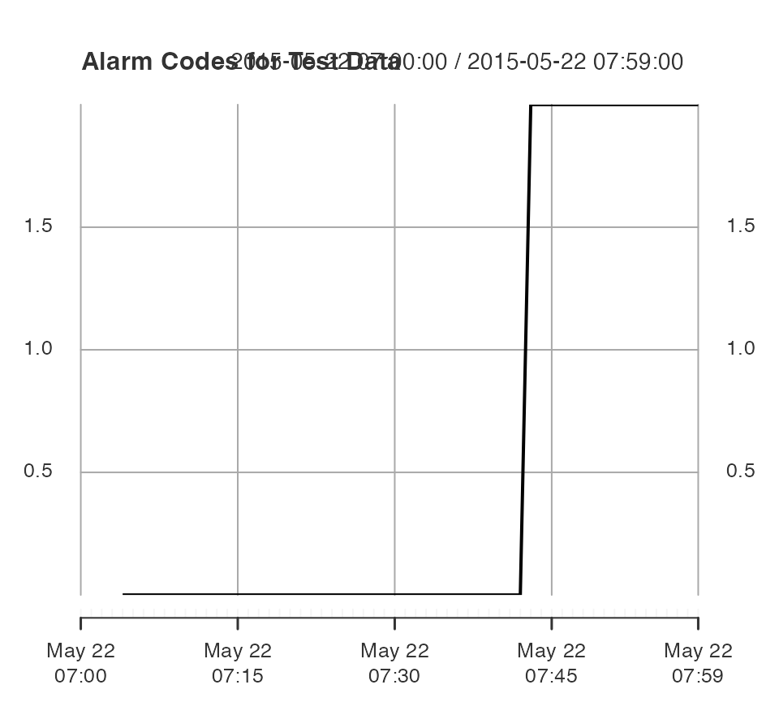

vignettes/MVSPC-Workflow.Rmd
MVSPC-Workflow.RmdThis document serves to introduce engineers to the workflow necessary to follow in order to analyze multivariate process monitoring data via the mvMonitoring package.
This is the accompanying package to the research published by Kazor et al (2016) and forthcoming paper by Odom et al (2017) (manuscript in progress). The mvMonitoring package is designed to make simulation of multi-state multivariate process monitoring statistics easy and straightforward, as well as streamlining the online process monitoring component.
mvMonitoring
The mvMonitoring package can be used to detect outliers in a correlated multivariate process with non-linear, non-stationary, or autocorrelated feature behavior. These process outliers are often indicative of system fault. The common and naive approach to multivariate process monitoring is to use expert opinion to identify a few important features to monitor visually, and raise an alarm if these features travel outside pre-defined normal operating boundaries.
However, this split univariate approach fails to account for the correlated nature of the process features, so some engineers have taken to monitoring the system as a single correlated multivariate process rather than a collection of independent univaraite processes. In the literature review of the motivating papers, the authors cite how this approach has benefitted the science of process monitoring as a whole. Unfortunately, this approach has its own shortcomings – namely, montioring a multivariate process in its original feature space can lead to exorbitant computational costs.
To this end, principal components analysis (PCA) and its many modifications have been employed to reduce the computation necessary to monitor a multivariate process as a whole. This package is an implementation of one such PCA modification.
AD-PCA is adaptive-dynamic PCA, which accounts for non-linearity, non-stationarity, and autocorrelation in the multivariate process, and this modification is thoroghly discussed in Kazor et al (2016).
Multi-State AD-PCA (MSAD-PCA) allows process engineers to account for a few very different process states. Specifically, this modification should be used when features under different process states have different means, correlations, or variances.
msp Functions
These are brief descriptions of the external functions useful for multivariate statistical process monitoring via MSAD- or AD-PCA.
mspProcessData
This function generates three-dimensional multi-state or single-state non-linear, non-stationary, and autocorrelated process observations. We follow the seminal work of Dong and McAvoy (1996) for generation of the foundational stationary and independent features.
So that the simulated features have non-zero correlations, Dong and McAvoy created their three features all as polynomial functions of a single latent variable \(t(s)\), where \(s = 1, \ldots, \omega\) is the observational index of the process.
The mspProcesData function induces autocorrelation in \(t\) through its errors, \(\varepsilon_s\), where \[
\varepsilon_1 \sim \mathcal{N}\left(\frac{1}{2}(a + b)(1 - \phi), \frac{b - a}{12} (1 - \phi ^ 2)\right),
\] where \(a = 0.01\) and \(b = 2\). Now, we define the first-order autoregressive process on \(\varepsilon_s\) by \[
\varepsilon_s = \varphi\varepsilon_{s - 1} + (1 - \varphi)\varepsilon,
\] where \(\varepsilon\) is as defined in the previous expression and the autocorrelation component \(\phi = 0.75\). The mean and variance multipliers are the mean and variance of a random variable from the \(\mathcal{U}_{[a,b]}\) distribution.
This \(t\) vector will be sinusoidal with period \(\omega = 7 * 24 * 60\) (signifying a weekly period in minute-level observations). We then synthesize a \(t\) with \[ t^*_s = -\cos\left( \frac{2\pi}{\omega} s \right) + \epsilon_s, \] and scale \(t^*\) to \[ t = \frac{(b - a)(t^*_s - \text{min}(t^*_s))}{\text{max}(t^*_s) - \text{min}(t^*_s)} + a. \] Finally then, the \(t\) vector will lie entirely in \([a,b]\).
First mspProcessData simulates three features, with each feaure operating under \(k\) different states. Let \(<x_k(t), y_k(t), z_k(t)>\) be the notation for State \(k\). These are the three features under State 1 (normal operating conditions, or NOC) as three functions of \(t\): \[\begin{align}
\textbf{x}(\textbf{t}) &\equiv \textbf{t} + \boldsymbol\varepsilon_1, \\
\textbf{y}(\textbf{t}) &\equiv \textbf{t} ^ 2 - 3 * \textbf{t} + \boldsymbol\varepsilon_2, \\
\textbf{z}(\textbf{t}) &\equiv -\textbf{t} ^ 3 + 3 * \textbf{t} ^ 2 + \boldsymbol\varepsilon_3,
\end{align}\] where \(\varepsilon_i \sim N(0, 0.01)\). The mspProcessData function calls the internal processNOCdata function to generate single-state observations under normal operating conditions (NOC).
The multi-state feature expression is induced by rotation and scaling of certain sets of observations. To induce a three-state, hourly switching process (the default), the mspProcessData function will create a label column that switches from “1” to “2” to “3” every hour. State “1” will be the features generated under the single-state assumption, while State “2” and State “3” are generated as follows. These states will be scaled rotations of the current \(<x,y,z>\) set. The second state is yaw, pitch, and roll rotated by (0, 90, 30) degrees, and the scales are multiplied by (1, 0.5, 2). The third state is yaw, pitch, and roll rotated by (90, 0, -30) degrees, and the scales are multiplied by (0.25, 0.1, 0.75).
\(\mathcal{S}_1\): \(\textbf{X}(t_s) := \langle x(t_s), y(t_s), z(t_s)\rangle\).
\(\mathcal{S}_2\): \(\textbf{X}(t_s) := \langle x(t_s), y(t_s), z(t_s)\rangle \cdot \textbf{P}_1\boldsymbol\Lambda_1\), where \[ \textbf{P}_1 = \begin{bmatrix} 0 & 0.50 & -0.87 \\ 0 & 0.87 & 0.50 \\ 1 & 0 & 0 \end{bmatrix} \] is the orthogonal rotation matrix for a yaw, pitch and roll degree change of \(\langle 0^{\circ}, 90^{\circ}, 30^{\circ} \rangle\), and \(\boldsymbol\Lambda_1 = \text{diag}(1, 0.5, 2)\) is a diagonal scaling matrix.
\(\mathcal{S}_3\): \(\textbf{X}(t_s) := \langle x(t_s), y(t_s), z(t_s)\rangle \cdot \textbf{P}_2\boldsymbol\Lambda_2\), where \[ \textbf{P}_2 = \begin{bmatrix} 0 & 0.87 & -0.50 \\ -1 & 0 & 0 \\ 0 & 0.50 & 0.87 \end{bmatrix} \] is the orthogonal rotation matrix for a yaw, pitch and roll degree change of \(\langle 90^{\circ}, 0^{\circ}, -30^{\circ} \rangle\), and \(\boldsymbol\Lambda_2 = \text{diag}(0.25, 0.1, 0.75)\) is a diagonal scaling matrix.
These rotation matrices \(\textbf{P}_1\) and \(\textbf{P}_2\) turn the states in three-dimensional space so that the states are at right angles to each other in at least one dimension, and the scaling matrices \(\boldsymbol\Lambda_1\) and \(\boldsymbol\Lambda_2\) inflate or deflate the process variances along each principal component. The mspProcessData function calls the internal function dataStateSwitch which splits the observations by state and applies the state-specific rotation and scaling through the internal rotateScale3D function.
Faults can be introduced to single- or multi-state data via the mspProcessData function. The default fault strt index is 8500, or roughly 84% through the 10,080 observation cycle. These faults are added through the internal faultSwitch function.
Fault 1A is a positive shift to all three features before state rotation: \(\textbf{X}^*(t_s) = \textbf{X}(t_s) + 2,\ s \ge 8500\).
Fault 1B is a positive shift to the \(x\) feature before state rotation: \(x^*(t_s) = x(t_s) + 2,\ s \ge 8500\).
Fault 1C is a positive shift to the \(x\) and \(z\) features in State 3 only and after state rotation: \(x^*(t_s) = x(t_s) + 2,\ z^*(t_s) = z(t_s) + 2,\ s \ge 8500\).
Fault 2A is a positive drift across all the process monitoring features before state rotation: \(\textbf{X}^*(t_s) = \textbf{X}(t_s) + (s - 8500)\times 10^{-3}\), \(s > 8500\).
Fault 2B is a positive drift across the \(y\) and \(z\) process monitoring features before state rotation: \(y^*(t_s) = y(t_s) + (s - 8500)\times 10^{-3},\ z^*(t_s) = z(t_s) + (s - 8500)\times 10^{-3}\), \(s > 8500\).
Fault 2C is a negative drift in the \(y\) process monitoring feature in State 2 only and after state rotation: \(y^*(t_s) = y(t_s) - 1.5 \times \frac{s - 8500}{10080 - 8500}\), for \(s > 8500\).
Fault 3A is an amplification of the underlying latent variable \(t\) for all features. The maximum latent drift of this fault will be 5 + 1: \(\textbf{X}^*(t_s) = \textbf{X}(t_s^*),\ s > 8500\), where \(t_s^* = \left[\frac{5(s - 8500)}{\omega - 8500} + 1\right]t_s\).
Fault 3B is a mutation of the underlying latent variable \(t\) for the \(z\) feature: \(z^*(t_s) = z(\log t_s^*)\), \(s \ge 8500\). This fault will dampen the underlying latent effect for \(z\) if \(t_s > 1\) and amplify this effect if \(t_s < 1\).
Fault 3C is a polynomial mutation of the error for the \(y\) feature in State 2 only and after state rotation: \(y^*(t_s) = y(t_s) + 2 * \textbf{e}_3(s) - 0.25\), for \(s > 8500\).
The mspProcessData function can generate weeks’ worth of non-linear, non-stationary, autocorrelated, multi-state, multivariate process data useful to test new process monitoring techniques. Users can generate observations under NOC to measure false alarm rates, or induce one of nine pre-built faults to test detection time and consistency with repeated Monte Carlo sampling. We expect this function will generate interesting data useful enough to compare new and improved process monitoring techniques with existing methods.
mspTrain
The mspTrain function will generate projection matrices and test statistic thresholds from test data matrices.
xts Data Matrix
An xts data matrix is first and foremost a matrix, not a data frame. For users very familiar with data frame manipulation (with dplyr for instance), the slight but profound differences between manipulating matrices and data frames become quickly apparent. Because of the class requirements for matrices, all features must be integer or double objects. The mspTrain function cannot train on character information.
The xts object class stands for extendible time series and comes from the package xts, which is itself built on the package zoo. The date and time information (necessarily as POSIX objects) are stored as the row indices of xts matrices. We recommend the package lubridate for manipulating POSIX objects.
When implementing single-state AD-PCA, this class vector simply needs to be a numeric column of the same value. However, for MSAD-PCA, the class vector should be an integer vector of class membership. The mspTrain function will split the observations by the class label, apply single-state AD-PCA to each class, then return the class-specific projection matrices and thresholds. Because of this split-apply-combine strategy, users must ensure that one or more classes are not too “rare” – that is, the class-specific sample size should be sufficiently large to allow for stable covariance matrix inversion. For \(p\) features (inlcuding lags), covariance inversion requires a class sample size greater than \(p ^ 2 / 2\). Because of this, pay close attention to model parsimony – don’t block the observations on a factor unless the factor significantly affects the observations’ mean vector or covariance matrix.
Because of the non-linear, non-stationary, and autocorrelated nature of some process monitoring applications, the mspTrain function allows users to include lags of all feature variables and also to update the training window over time. Including lags of the features in the data matrix can significantly reduce the negative effects of autocorrelation. Re-estimating the projection matrix and test statistic thresholds at pre-specified time intervals reduces the negative effects of non-linearity and non-stationarity in the observations.
The idea is to divide a non-linear and non-stationary process along some boundaries (every day, for instance), and then the process becomes locally linear and stationary within the window. As time progresses, the oldest observations are “forgotten” and the newest observations are “learned”, which causes the projection and NOC thresholds to update over time.
After the observations have been split by class, the mspTrain function will call the internal function processMonitor, which in turn calls the internal function faultFilter. This function will calculate a linear projection matrix of the data by taking the PCA of the training data matrix. The observations will then be projected linearly into a reduced-feature subspace which preserves a chosen proportion of the energy of the training data, where the energy of a matrix is the sum of eigenvalues of that matrix. The default proportion is 90%. This projection is calculated by the internal pca function.
Furthermore, non-parametric threshold values are calculated for the two process monitoring statistics – Squared Prediction Error and Hotelling’s \(T^2\). These monitoring statistics are described in the motivating paper. These threshold values are found in the internal threshold function, and passed through the function pipe to be returned by mspTrain. The \(\alpha\)-level of the nonparametric threshold is controlled by the user, and its default value is 0.001.
Finally, the mspTrain function will remove any observation which would cause an alarm from the training data set. The alarm free observations will be returned in one xts matrix, while the alarmed observations will be returned by another. When training your process monitor, pay attention to the observations flagged as alarms. The proportion of observations flagged as faults may be higher than the \(\alpha\)-level specified, so some tuning may be necessary.
mspMonitor
After training the model with mspTrain, the projection matrices and non-parametric monitoring statistic thresholds can be used to flag incoming observations. This function can check every observation in a test matrix (useful when analyzing past data), but was instead designed to test a single incoming observation at a time via a script or batch file. To this end, the mspMonitor function projects a single observation with the class projection matrices returned by mspTrain and checks the observation’s SPE and \(T^2\) statistics against the thresholds returned by mspTrain. The mspMonitor will then append the monitoring statistic values, and indicators if these values exceed normal thresholds, to the end of the observation row. This new appended observation will be passed to the mspWarning function.
mspWarning
If an observation returned by the mspMonitor function has positive statistic indicator values for either the SPE or \(T^2\) monitoring statistics, then the mspWarning function will query the last set \(r\) observations for other flags. If all \(r\) observations are positive for anomalies, then the mspWarning function will issue an alarm. This is the parameter “faultsToTriggerAlarm”, and it defaults to 5. However, this default value depends heavily on the scale of the data: for continuous observations aggregated and recorded every five seconds, the number of sequential faults necessary to trigger an alarm should be very high, perhaps even 50 or more. For observations aggregated to the 10-minute-scale, only three sequential faults may be necessary.
In future updates of this package, this function will also have an option to issue an alarm if a critical mass of non-sequential alarms is reached in a set period of observations. This modification may be necessary if the observation level becomes more fine than the 1-minute-level. Additionally, this function will also be equipped to take in a cell phone number and service provider and issue an alarm via SMS through email.
This section provides a fully-commented code walkthrough for the main msp functions in the mvMonitoring package.
First begin by generating multi-state data from a fault scenario. This code will yield observations under Fault 2A, as described the Synthetic Fault Induction section. We choose the default options for the period length (7 days * 24 hours * 60 minutes = 10,080 observations), the starting index of the fault (8500 out of 10080), and the time stamp for beggining the data is 16 May of 2016 at 10:00AM (my wedding anniversary). As we can see from the str() function, we have an xts matrix with 10080 rows and four columns (the state indicator and the three features).
library(mvMonitoring)
fault1A_xts <- mspProcessData(faults = "A1",
period = 7 * 24 * 60,
faultStartIndex = 8500,
startTime = "2015-05-16 10:00:00 CST")
str(fault1A_xts)## An 'xts' object on 2015-05-16 10:00:00/2015-05-23 09:59:00 containing:
## Data: num [1:10080, 1:4] 1 1 1 1 1 1 1 1 1 1 ...
## - attr(*, "dimnames")=List of 2
## ..$ : NULL
## ..$ : chr [1:4] "state" "x" "y" "z"
## Indexed by objects of class: [POSIXct,POSIXt] TZ:
## xts Attributes:
## NULLNow that these observations are generated and stored in memory, the mspTrain function can train the MSAD-PCA model. The last 1620 observations (27 hours’ worth) will be saved for testing. The mspTrain function takes in the training data set partitioned between the observation and the label column. If this function errors, make sure the label column is not included in the data matrix – this will cause a singularity in the data. The function will 1. Train on the first three days’ worth of observations, as set by trainObs. 1. Scan the fourth day for anomalies, as set by updateFreq. 1. Remove any alarmed observations. 1. “Forget” the first day’s observations. 1. “Learn” the non-alarmed observations from the fourth day. 1. Retrain and repeat until the end of the data matrix
Furthermore, the Dynamic = TRUE option means that the mspTrain function will include the lags specified by the lagsIncluded argument. Finally, the number of sequential anomalous observations necessary to raise an alarm is set at 5 by the faultsToTriggerAlarm argument. These last three arguments are set to their defaults.
train1A_xts <- fault1A_xts[1:8461,]
# This function will run in 13 seconds on the author's machine.
train1A_ls <- mspTrain(data = train1A_xts[,-1],
labelVector = train1A_xts[,1],
trainObs = 3 * 24 * 60,
updateFreq = 1 * 24 * 60,
Dynamic = TRUE,
lagsIncluded = 0:1,
faultsToTriggerAlarm = 5)The mspTrain function returns a list of four objects:
FaultChecks: An xts matrix of monitoring statistics and associated indicators for all observations after the burn-in of trainObs. It will have 10080 - trainObs number of rows and five columns:
SPE: the SPE statistic for each observation.SPE_Flag: an indicator showing if the SPE statistic for that observation is beyond the calculated threshold; 0 is normal, 1 is flagged.T2: the \(T^2\) statistic for each observation.T2_Flag: an indicator showing if the \(T^2\) statistic for that observation is beyond the calculated threshold; 0 is normal, 1 is flagged.Alarm: an indicator showing if the observation is in a sequence of flagged observations; 0 is normal, 1 is alarmed.Non_Alarmed_Obs: An xts matrix will all observations with an alarm code of 0 from FaultChecks. Of note, this matrix contains the data, while the FaultChecks matrix only contains the monitoring statistics and indicators.Alarms: An xts matrix of all the observations removed from the training data matrix.TrainingSpecs: a list with length equal to the number of classes – in this case 3. For each class, this list contains a list of six objects:
SPE_Threshold: a named numeric scalar of the 1 - \(\alpha\) percentile of the non-parametric estimate of the SPE statistic density.T2_Threshold: a named numeric scalar of the 1 - \(\alpha\) percentile of the non-parametric estimate of the \(T^2\) statistic density.projectionMatrix: The \(p \times q\) matrix of eigenvectors necessary to project a \(p\)-dimensional observation to \(q\) dimensions. This is necessary to reduce the dimension of any test observation, and is used in calculating the SPE statistic for test observations.LambdaInv: The inverse of the diagonal \(q \times q\) matrix of eigenvalues. This matrix is used to calculate the \(T^2\) statistic for test observations.muTrain: The mean vector of the training observations. This is used to center the test observations on the training mean.RootPrecisTrain: The \(p \times p\) diagonal matrix of the inverse square roots of the feature variances. This is used to scale the test observations into the training scale.The training data summary was given by mspTrain, so this information can now be used to monitor incoming observations for system faults.
First, concatenate the last given observation from the training set as “row 0” of the test data set. This will enable mspMonitor to include lag-1 features. Similarly, one would include the last \(k\) observations of the training set should the process dictate the need for any lag-\(k\) features. Because the Fault Start Index was set to 8500, this testing window will show the change point between observations generated under normal conditions and those generated under a fault state.
library(xts)
test1A_xts <- fault1A_xts[8460:8520, -1]
lagTest1A_xts <- lag.xts(test1A_xts, 0:1)
lagTest1A_xts <- cbind(fault1A_xts[8461:8520,1],
lagTest1A_xts[-1,])
head(lagTest1A_xts)## state x y z x.1 y.1
## 2015-05-22 07:00:00 1 0.5707662 -1.399283 0.6455640 0.3830219 0.08987747
## 2015-05-22 07:01:00 1 0.3673432 -1.177629 0.7563658 0.5707662 -1.39928308
## 2015-05-22 07:02:00 1 0.4969083 -1.437263 1.0858186 0.3673432 -1.17762868
## 2015-05-22 07:03:00 1 0.4427885 -1.512438 1.0766973 0.4969083 -1.43726341
## 2015-05-22 07:04:00 1 0.5141362 -1.481937 1.0149583 0.4427885 -1.51243798
## 2015-05-22 07:05:00 1 0.3879009 -1.347691 0.9356194 0.5141362 -1.48193652
## z.1
## 2015-05-22 07:00:00 0.2647849
## 2015-05-22 07:01:00 0.6455640
## 2015-05-22 07:02:00 0.7563658
## 2015-05-22 07:03:00 1.0858186
## 2015-05-22 07:04:00 1.0766973
## 2015-05-22 07:05:00 1.0149583With the lagged test observations in the working environment, the mspMonitor function can be applied. This function (similarly to mspTrain) takes in the label information as a separate argument from the input data. Further, the mspMonitor function takes in the TrainingSpecs object returned in the results list from mspTrain. Notice that the first six rows of the monitor matrix are the exact same as the first six rows of the lagged test matrix, except that the rows of the monitor matrix have the monitoring statistic and corresponding indicator columns appended.
monitor1A_xts <- mspMonitor(observations = lagTest1A_xts[,-1],
labelVector = lagTest1A_xts[,1],
trainingSummary = train1A_ls$TrainingSpecs)
head(monitor1A_xts)## x y z x.1 y.1
## 2015-05-22 07:00:00 0.5707662 -1.399283 0.6455640 0.3830219 0.08987747
## 2015-05-22 07:01:00 0.3673432 -1.177629 0.7563658 0.5707662 -1.39928308
## 2015-05-22 07:02:00 0.4969083 -1.437263 1.0858186 0.3673432 -1.17762868
## 2015-05-22 07:03:00 0.4427885 -1.512438 1.0766973 0.4969083 -1.43726341
## 2015-05-22 07:04:00 0.5141362 -1.481937 1.0149583 0.4427885 -1.51243798
## 2015-05-22 07:05:00 0.3879009 -1.347691 0.9356194 0.5141362 -1.48193652
## z.1 SPE SPE_Flag T2 T2_Flag Alarm
## 2015-05-22 07:00:00 0.2647849 1.0258065 0 26.980563 0 NA
## 2015-05-22 07:01:00 0.6455640 2.1357031 0 7.246128 0 NA
## 2015-05-22 07:02:00 0.7563658 0.3958352 0 6.784374 0 NA
## 2015-05-22 07:03:00 1.0858186 0.3516739 0 5.139558 0 NA
## 2015-05-22 07:04:00 1.0766973 0.3662805 0 5.194101 0 NA
## 2015-05-22 07:05:00 1.0149583 1.0048317 0 6.046283 0 NANote that all Alarm codes in the monitor matrix above are recorded with NA values. This is because the mspMonitor function does not check the sequential flag conditions of the monitor matrix. This is the responsibility of the mspWarning function. Because the mspWarning function is designed to test one incoming observation at a time through a script or batch file, the following example is designed to mimic the behavior of the mspWarning function as each new observation comes online.
alarm1A_xts <- monitor1A_xts
for(i in 1:nrow(alarm1A_xts)){
if(i < (5 + 1)){
alarm1A_xts[1:i,] <- mspWarning(alarm1A_xts[1:i,])
}else{
alarm1A_xts[(i - 5):i,] <- mspWarning(alarm1A_xts[(i - 5):i,])
}
}The fault was introduced at index 8500, which corresponds to about 40 minutes into the test hour.
 The alarm codes are
We have supplied our motivation for this package, and we have discussed implementing a multivariate process monitoring scheme with this package using the example of a decentralized WWT plant in Golden, CO. We believe that this software will provide system engineers with the tools necessary to quickly and accurately detect abnormalities in multivariate, autocorrelated, non-stationary, non-linear, and multi-state water treatment systems. Further, we have given a synthetic example showing how the functions within this package would be implemented and tuned in practice.